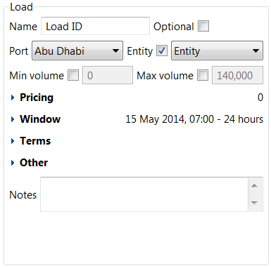
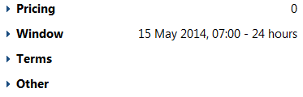

The bottom part of the Cargo dialog

contains editor panels for each slot (transaction) in the cargo, with the main inputs being:
|
Name |
The slot’s unique name (typically a load name and cargo name should be the same). |
|
Optional |
If this checkbox is checked, the optimiser can construct a schedule which does not contain the specified load or discharge slot (if this is commercially viable). If the checkbox is checked, the optimiser will try to ensure that the specified transaction occurs in the generated schedule. |
|
Port |
The port where the LNG is loaded or discharged. |
|
Entity |
The organisational entity which legally conducts the transaction. Overrides contract default. |
|
Min volume / Max volume |
If the checkboxes next to these inputs are checked, you can specify a minimum or maximum volume of LNG for the transaction. This can either be m³ or mmBtu. Overrides contract defaults. |
|
Notes |
This input allows you to make notes or comments regarding the slot. |
The slot editor has various collapsible sections

which can be clicked to expand the section and edit the relevant slot details.